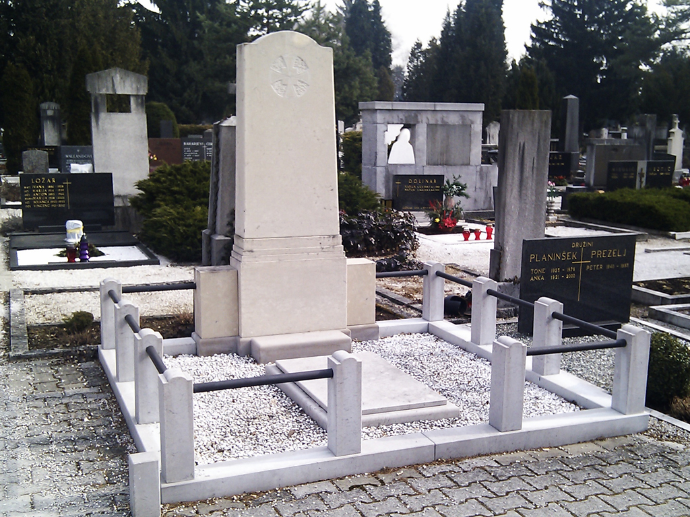
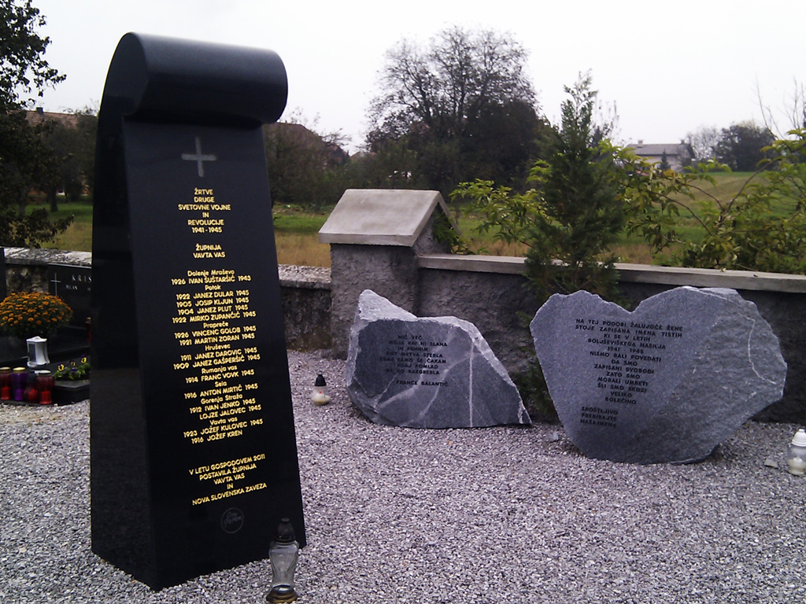
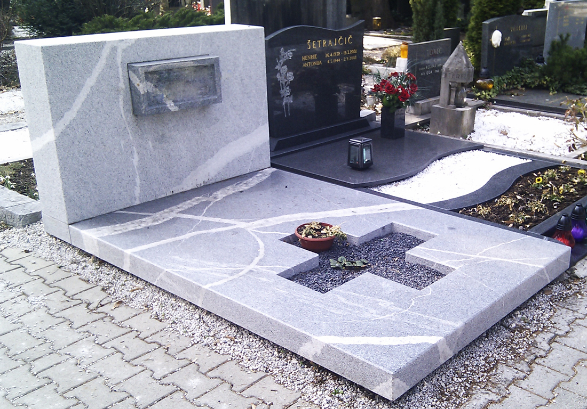

Izdelki in storitve
Kar zamislite v kamnu, izdelamo
Za interier in eksterier ter za spomin na vaše bližnje — vse iz domačega ali tujega kamna.
Oprema notranjih in zunanjih prostorov
Za opremo vašega notranjega ali zunanjega bivalnega prostora izdelamo kamnite elemente po meri — od kuhinje do vrta.
Pošljite povpraševanje- Police
- Stopnice
- Talne in stenske obloge
- Kuhinjski in kopalniški pulti
- Šanke
- Obloge kaminov
- Masivna korita in tuš kadi
- Okenske in vratne okvirje
- Letne kuhinje
- Stebri
Spomeniki, izdelani in obnovljeni s spoštovanjem
Po našem predlogu ali vašem načrtu, skici ali idejni zasnovi izdelamo ali obnovimo nagrobnik poljubne oblike, velikosti in vrste domačega ali tujega kamna. Na novem ali obstoječem nagrobniku izdelamo vse vrste napisov in motivov v poljubni obliki ter ponudimo vse vrste nagrobnih dodatkov.
Povprašajte za nagrobnik


Od zamisli do vgradnje
Kako poteka delo
Svetovanje in izbira kamna
Pomagamo pri izbiri najprimernejšega naravnega ali tehničnega kamna za vaš projekt.
Načrt in obdelava
Po vašem načrtu, skici ali idejni zasnovi kamen obdelamo ročno in s sodobno tehnologijo.
Izdelava in vgradnja
Izdelke izdelamo poljubne oblike in velikosti ter poskrbimo za natančno vgradnjo.